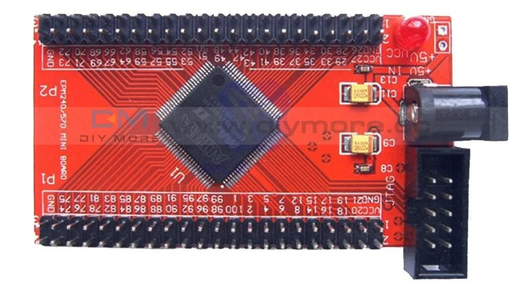

This project template forms the basis of an expansion board (MASK) for the
EPM240 Mini Red a CPLD board with two 42-pin GPIO header.
Note: for the EPM240_V1.4, see the Altera EPM240 - Blue.

This project includes a PCB edge set according to the edge board, with 2 connectors placed correctly to align the two boards, an alternative edge set is included in the User.Drawings layer for less the JTAG accessible.
(c)2024 Manuel Alejandro Baez Ponce
(c)2024 KiCad Developers